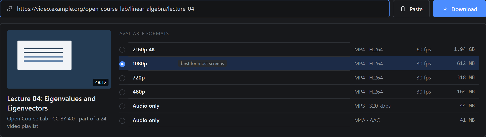
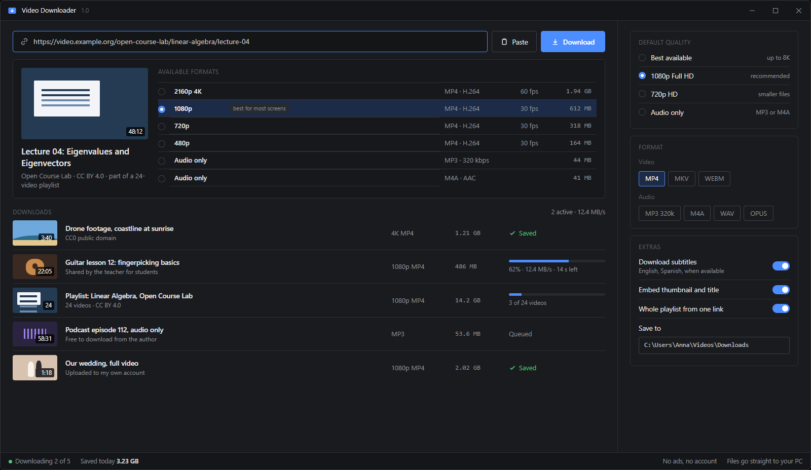
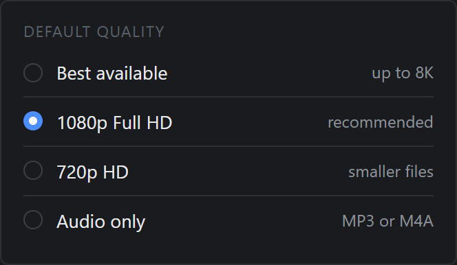
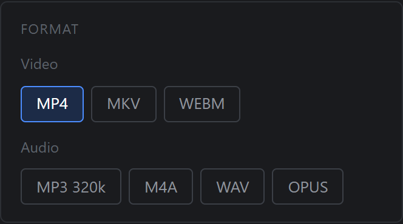
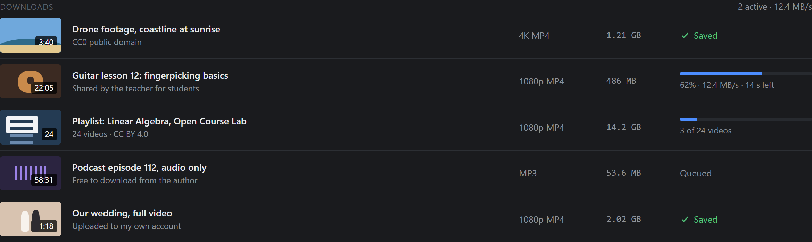
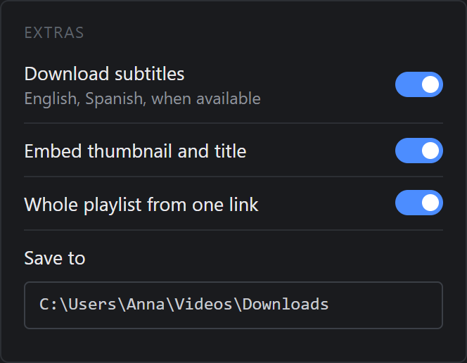

01
Download a video from a link
Paste the address of a page with a video and the app lists every available format with its size, before anything is downloaded. Pick one and press Download.

Free, portable, no ads
Paste a link, pick the quality and save the video straight to your PC. Up to 4K, 1080p or audio only as MP3, whole playlists and subtitles included. No ads, no account, nothing to install.
Windows 10 and 11, 64-bit. No installation.

01How it works
No browser extension, no sign-up, no pop-ups. The video goes straight to a folder on your PC.
Unzip the file and open VideoDownloader.exe. Nothing to install.
Copy the address of the page with the video and press Paste.
Choose 4K, 1080p, 720p or MP3. The file lands in your Downloads folder.
02Features
Each feature answers something people look for when they want to keep a video on their computer.
Paste the address of a page with a video and the app lists every available format with its size, before anything is downloaded. Pick one and press Download.

Set a default quality once: best available, 1080p Full HD, 720p for smaller files, or audio only. The app picks the closest format the site offers.

Save only the sound as MP3, M4A, WAV or OPUS, for lectures, podcasts and music you are allowed to keep. Video can be saved as MP4, MKV or WEBM.

Paste a playlist link and every video in it is queued with the same settings. The queue shows progress, speed and time left for each file.

Save subtitles in the languages you choose when the video has them, and embed the thumbnail and title into the file so your library stays tidy.

03Compare
Online downloader sites and browser extensions are the usual alternatives. Here is how they compare.
| Feature | This app | Online downloaders | Browser extensions |
|---|---|---|---|
| No pop-up ads or fake download buttons | |||
| Full quality up to 4K | |||
| Whole playlists in one go | |||
| Audio only as MP3 | |||
| Subtitles saved with the video | |||
| Nothing to install in the browser |
Online downloaders often cap quality at 720p and surround the button with ads. Video extensions are regularly removed from browser stores and can read every page you visit.
Download Video Downloader, unzip it and run the .exe. Copy the link of the page with the video, press Paste, choose a quality and press Download. The file is saved to your Videos\Downloads folder.
After you paste the link, the app lists every format the site offers. Pick 1080p or 2160p (4K) from the list, or set a default quality in the settings. If a site has no 4K version, the app cannot create one.
Choose Audio only in the format list, or set MP3 as the default audio format. The app saves just the sound track, which is handy for lectures and podcasts.
Paste the playlist link instead of a single video link. With Whole playlist from one link turned on, every video is added to the queue with the same quality and format.
It depends on the video and where you live. Saving your own videos, videos under a Creative Commons license, public domain footage or videos you have the owner's permission to download is fine. Downloading copyrighted videos without permission can break copyright law and a site's terms of service. Please download only what you have the right to keep.
No. Paid streaming services protect their videos with DRM, and Video Downloader does not bypass copy protection. It works with videos that a site makes available without DRM.
Free for Windows 10 and 11. Portable, no ads, open source.